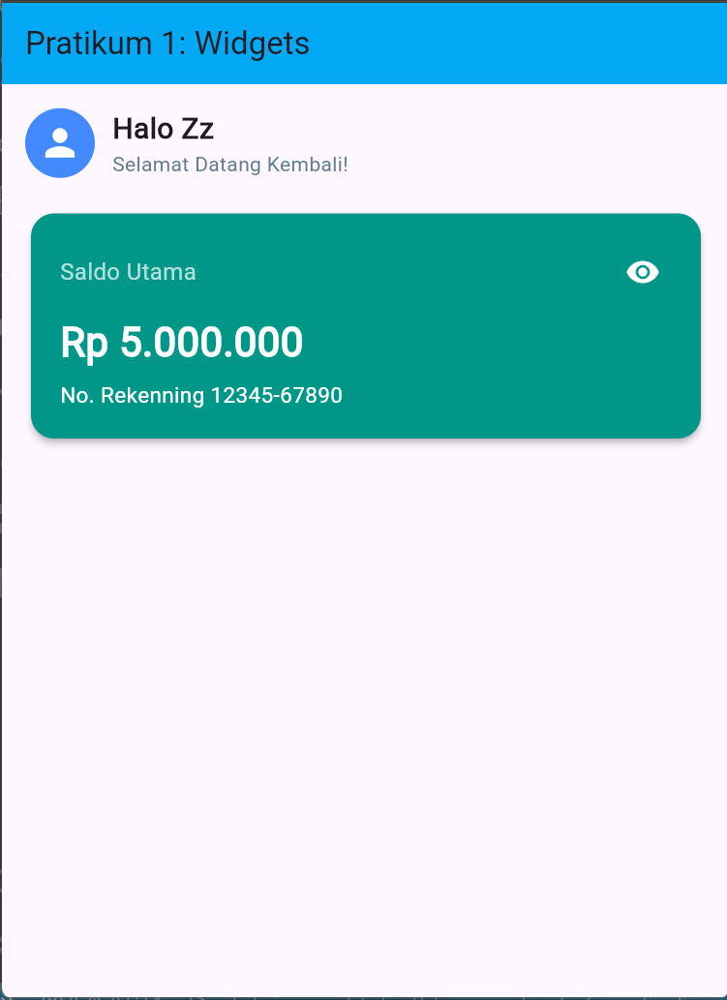

📖 BAB II: Pembahasan Praktikum 1
Pada praktikum pertama, fokus utama adalah pengenalan widget dan pengelolaan state sederhana. Aplikasi yang dibangun adalah prototipe halaman dashboard dari aplikasi Expense Tracker.
🛠️ Lingkungan Pengembangan (Tools)
📌 2.1 Implementasi Stateless Widget (GreetingWidget)
Pembuatan bagian sapaan pengguna dilakukan menggunakan StatelessWidget karena tidak ada perubahan data interaktif pada komponen ini. Widget disusun menggunakan Row untuk menyejajarkan avatar dengan teks secara horizontal, serta Column di dalamnya untuk menyusun teks sapaan dan ucapan selamat datang secara vertikal.
.png)
.png)
.png)
.png)
📌 2.2 Implementasi Stateful Widget (BalanceCardWidget)

Komponen kartu saldo mengimplementasikan StatefulWidget karena membutuhkan interaksi untuk menampilkan atau menyembunyikan nominal saldo.
- Manajemen State: Menggunakan variabel boolean
_isBalanceVisibleyang diubah nilainya melalui fungsisetState()saat tombol eye icon ditekan. - Modifikasi Antarmuka: Tampilan kartu saldo dimodifikasi dengan menggunakan warna latar
Colors.teal. Selain itu, ditambahkan informasi tambahan berupa teks "No. Rekenning 12345-67890" di bagian bawah informasi saldo utama.
📌 2.3 Hasil Percobaan Praktikum 1

Berdasarkan antarmuka yang dihasilkan, aplikasi berhasil merender App bar berwarna biru muda (light blue), Greeting Widget, dan Balance Card berwarna teal yang dapat di-klik untuk mengubah visibilitas teks "Rp 5.000.000" menjadi "Rp ***********".
✅ Kesimpulan Modul 1
Dari praktikum ini dapat disimpulkan bahwa framework Flutter menggunakan paradigma deklaratif berbasis widget. Pemisahan kode antara StatelessWidget dan StatefulWidget sangat membantu efisiensi rendering, di mana komponen yang statis tidak perlu dimuat ulang (re-build) ketika terdapat perubahan state pada komponen dinamis layaknya fitur hide/show saldo.